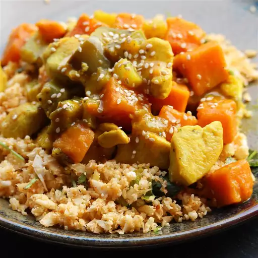

Healthy Tumeric Chicken Stew

This tumeric chicken stew recipe is one of my favorite 30-minute weeknight recipes. Tumeric (curcumin) is a bright yellow spice primarily found in India and Indonesia.
It's one of the main ingredients in curry and adds vibrant color and flavor to any dish.
Ingredients
- 2 tablespoons olive oil
- 2 skinless, boneless chicken breasts, cubed
- 2 medium sweet potatoes, cubed
- 1/2 medium red onion, chopped
- 1 small eggplant, cubed
- 2 cloves garlic, minced
- 1 tablespoon minced fresh ginger root
- 2 teaspoons ground tumeric
- 1/2 cup low-sodium chicken broth, or more as needed
Directions
- Heat oil in a large skillet over medium-high heat. Add chicken; cook and stir until no longer pink in the center,
about 5 minutes. Add sweet potatoes and onion; cook and stir until onion is translucent, 2 to 3 minutes. Add eggplant, garlic,
ginger, and tumeric; cook until fragrant, about 1 minute.
- Pour in broth and bring to a boil. Reduce the heat and simmer, stirring occasionally and adding more broth if necessary,
until vegetables are tender and stew has thickened, about 20 minutes.
Tips
You can use canola oil for olive oil and water for chicken broth if desired.